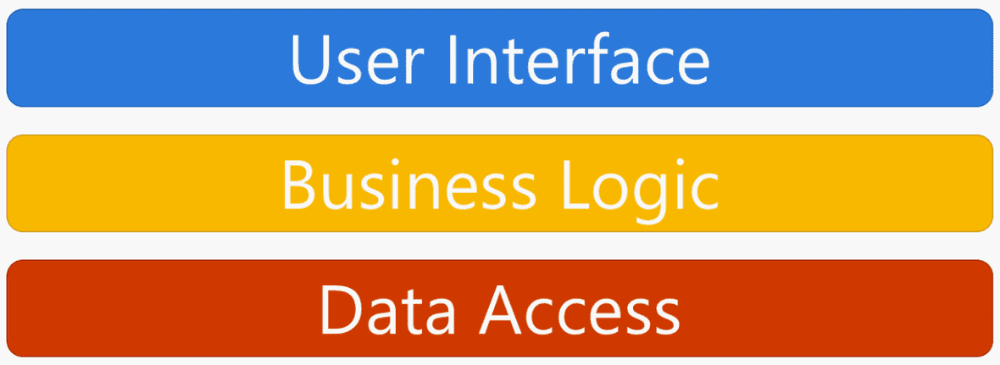
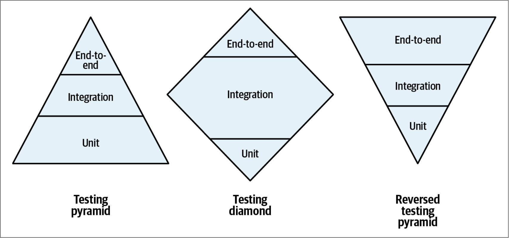
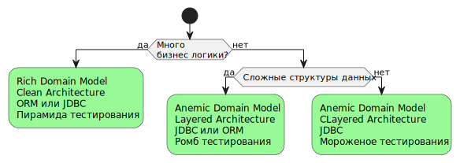

Katas
Проект Fi Transfer
Fi Transfer Ex1
Layered Architecture

Anemic Domain Model
В объектах предметной области инкапсулируются только данные, поведение же выносится в слой сервисов, расположенный поверх слоя предметной области.
Минусы
- Тесты сложно писать
- Хрупкие тесты
- Нет инкапсуляции. Слабые гарантии консистентности данных
Fi Transfer Ex2
Clean Architecture
 a.k.a. Hexagonal / Onion / Ports&Adapters Architecture
a.k.a. Hexagonal / Onion / Ports&Adapters Architecture
Rich Domain Model
Данные и поведение инкапсулируются внутри объектов предметной области.
Плюсы
- Быстрые тесты без моков
- Инкапсуляция. Объекты гарантируют свою консистентность
Виды тестирования

Выбор архитектуры

Рекомендации
- Functional core Imperative shell. По возможности отделяйте бизнес логику от IO.
- Always valid domain model. Не допускайте возможности использовать ваш код неправильно.
- No silver bullet. Используйте паттерны и технологии там, где это уместно.